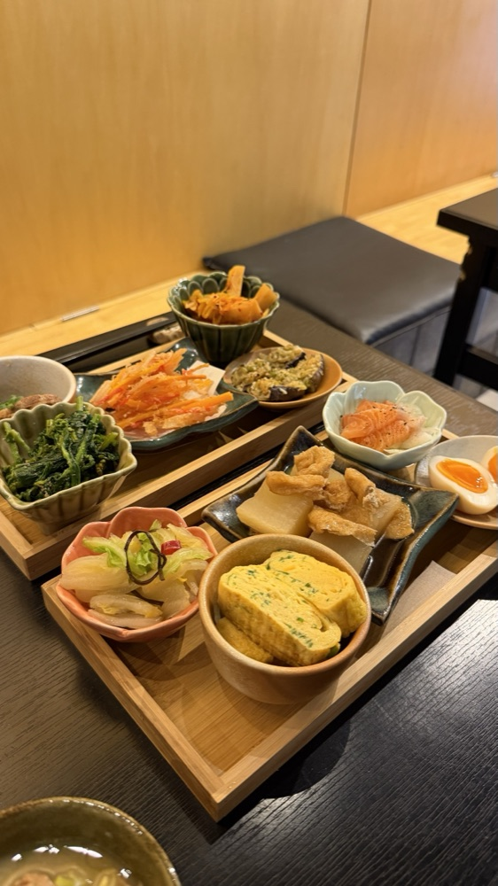
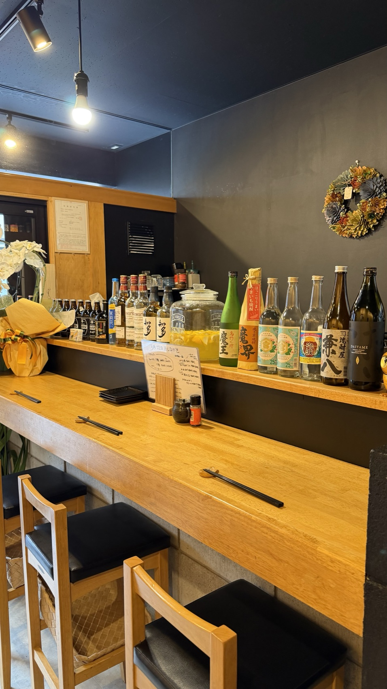
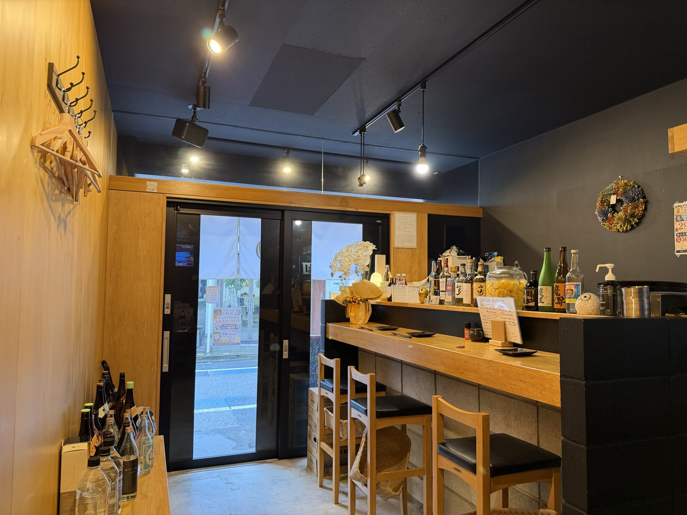
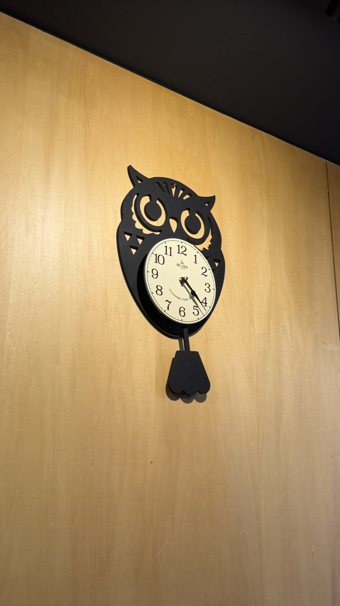
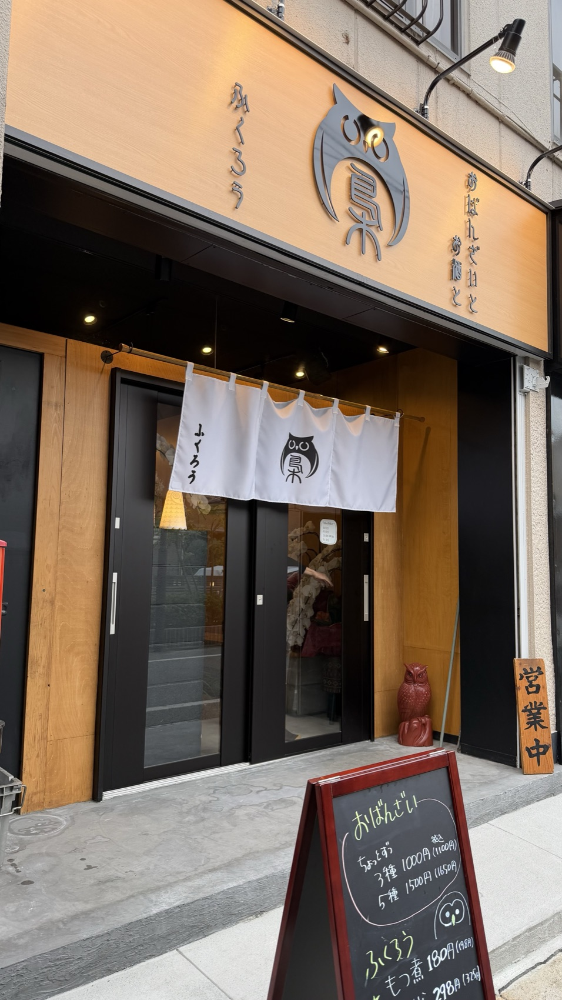

おばんざい3種
¥1,000日替わりのおばんざいから3種を、彩りよく一皿に。迷ったらまずはこれを。

— Obanzai Izakaya owl, Koiwa —
手作りのおばんざいを日替わりで十品。
えらぶ楽しみを、肩肘張らずに。ひとりでも、ふらりと。
CONCEPT
おばんざいは、家庭で日々作られてきたおかず。 気取らないけれど、滋味深い。だしと旬を大切にした、毎日でも食べたくなる味です。
小岩では珍しいおばんざいを、その日の気分で選びながら。 野菜をたっぷり、魚もしっかり。美容と健康にうれしい、体にやさしい一皿を日替わりでご用意しています。
「ふくろう」は、不苦労、福来郎。 苦労知らずで福を呼ぶ、夜の縁起の鳥。
一日の終わりに、ふっと羽を休める。 ひとりでも、仲間とでも、ふらりと立ち寄れる。 そんな小岩の止まり木でありたいと、私たちは願っています。
— えらぶ楽しみを、おばんざいで。
GALLERY


— カウンター7席・テーブル14席。ひとりでも、貸切でも —
ACCESS
